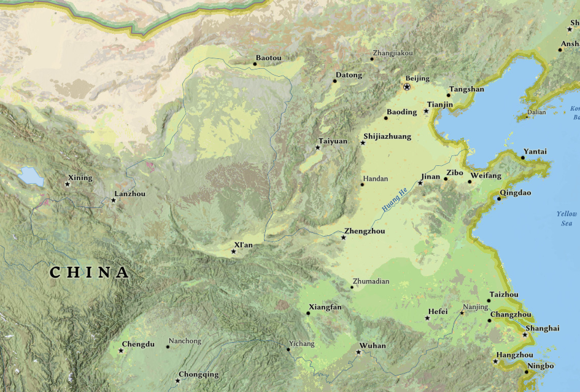

Tag, Tag, Tag, Tag
The Battle of Gaixia, fought in 202 BCE, was the final and decisive confrontation between Liu Bang of Han and Xiang Yu of Chu during the Chu–Han Contention—a civil war that followed the fall of the Qin dynasty. This battle not only ended years of conflict but also paved the way for the establishment of the Han dynasty, which would rule China for over four centuries and become one of its most influential dynasties.
After the collapse of the Qin dynasty in 206 BCE, power struggles erupted among former rebel leaders. The most prominent contenders were Liu Bang, a former peasant-turned-general, and Xiang Yu, a powerful aristocratic warlord. Initially allies, the two quickly became rivals in a brutal struggle for supremacy known as the Chu–Han Contention, which lasted for five years.
Xiang Yu held early advantages due to his military prowess and noble lineage. He controlled vast territories in eastern China and commanded a formidable army. However, Liu Bang proved to be a resilient and cunning leader. With the help of talented generals like Han Xin and Zhang Liang, he gradually gained ground and support among the people and former Qin officials.
By 203 BCE, Liu Bang had pushed Xiang Yu into a defensive position. The final showdown took place at Gaixia, in modern-day Anhui province. Liu Bang’s forces, bolstered by defections and coordinated by Han Xin, launched a coordinated attack on Xiang Yu’s army, encircling them in mountainous terrain and cutting off their supplies and escape routes.
To break the morale of Xiang Yu’s troops, Han forces employed psychological warfare. According to legend, Han soldiers sang folk songs from Xiang Yu’s native Chu region outside the encampment. Hearing the familiar songs, many Chu soldiers believed their homeland had already fallen and began to desert, contributing to a collapse in morale and fighting spirit.
Xiang Yu was left with a small remnant of his once-great army. Realizing defeat was inevitable, he attempted to break out of the encirclement with a small group of loyal followers. Pursued by Han troops, he fought a final battle on the banks of the Wu River. Rather than be captured, Xiang Yu committed suicide, reportedly exclaiming that Heaven had turned against him.
The victory at Gaixia marked the end of the Chu–Han Contention and the consolidation of power by Liu Bang, who soon declared himself Emperor Gaozu of Han. He established the Han dynasty, which would go on to usher in a golden age of Chinese culture, science, administration, and territorial expansion.
The battle also marked a symbolic transition from the aristocratic rule of earlier periods to a merit-based bureaucracy. Liu Bang’s rise from a commoner to emperor helped reshape Chinese political philosophy, emphasizing ability and loyalty over birthright—a principle that would underpin much of imperial Chinese governance going forward.
The Gaixia campaign has been immortalized in Chinese art, literature, and opera. The tragic romance between Xiang Yu and his consort Yu Ji (often stylized as Consort Yu) is a famous part of the tale. According to legend, she committed suicide to avoid capture and to prevent being a burden to Xiang Yu, adding a personal, tragic dimension to the political drama.
The Battle of Gaixia remains a landmark in Chinese history, representing both the brutality of civil war and the potential for political renewal. It signaled the end of fragmentation and the beginning of a unified empire that would shape Chinese identity and statecraft for millennia.